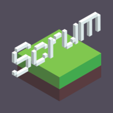

F2E 2022 Challenges
A 3-week frontend development challenge - working together with UI designer and trying new frontend technologies
PDF Sign
A web-browser only application to support digital signature on mobile & desktop devices
As reviewing the UI, realises the scope had been over and some features will required more than just frontend technology to integrate. For example, creating a personal account will require authentication scheme and an external datasource such as Firebase; saving signature history will probably require using browser database like IndexedDB; sharing files for multi-signature will require an online stroage for sharing either signatures or original/signed documents which will most likely lead to security & encryption issues; This application could easily develop into an MVP but cannot see which feature to focus as initial launch.
- 
Scrum Introduction
A step-by-step tutorial to conduct ideas of Scrum - an agile methodology of software development
Tested development with React Server Component and Next.js v13 app folder structure (without any server-side data fetching mechanism). It felt like working within feature folder structure where each route/layout has context-specific client-side and server-side React components, which was another applicable approach when working on large scale applications.
Related Tech stacks
Shared across applications
- Turborepo
- A monorepo tools to streamline better development experience & pipeline orchestration tools. It was a great fun to compare the working process between lerna@4.0.0, nx, lerna@^5, also how we can create packages just for shared configuration files.Reference
- Changesets
- A versioning workflow with integrated GitHub action. This was a new experience comparing to using conventional commit with auto-generated changelog.Reference
- Tailwind CSS
- A low-level but battery-included way to write css and set up design system. Coming from a background of working with Styled Components and theme context injection, this pure CSS class syntax does bring a lot of benefits of bundle sizing and support of React Server Components.Reference
- tsup & esbuild
- Preconfigured JavaScript bundler written in Golang. The performance is outstanding and will need more time to play around and benchmark.Reference